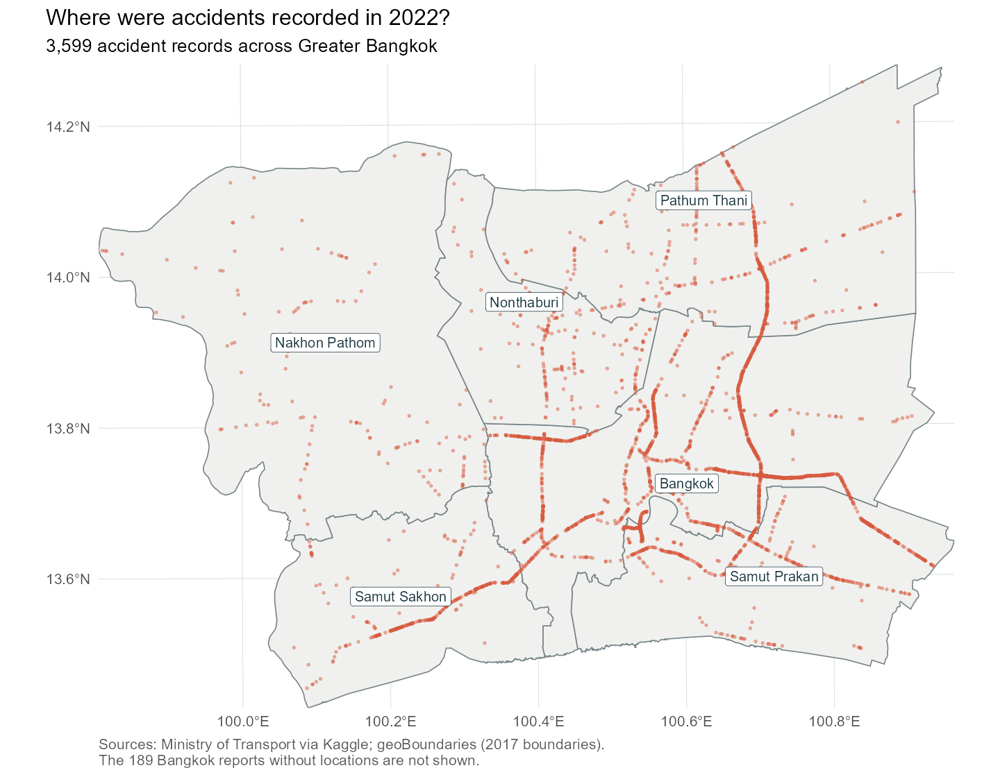
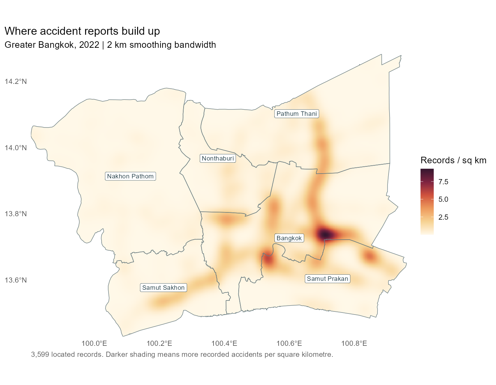
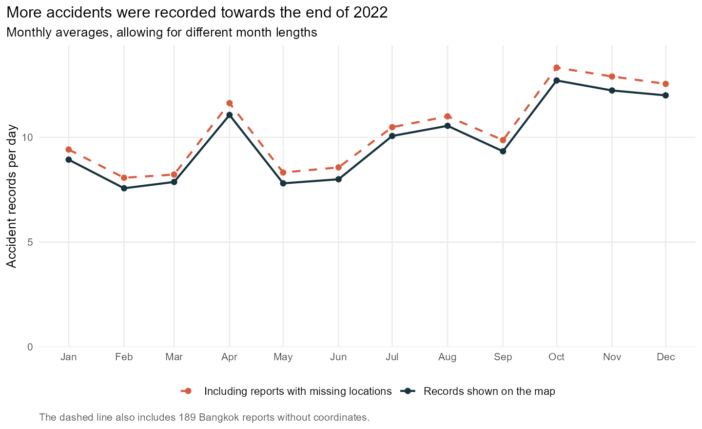
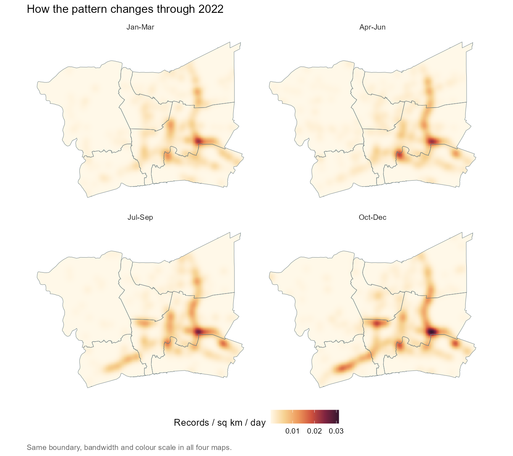
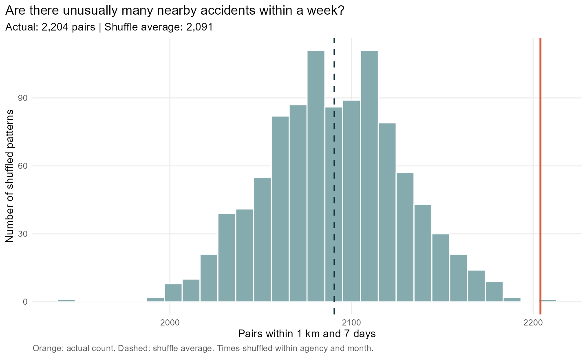

What the 2022 reports tell us
2026-09-16

The study covers 2022 and six provinces:
Bangkok, Nonthaburi, Pathum Thani, Nakhon Pathom, Samut Prakan and Samut Sakhon.
Each record is an accident report, rather than a count of vehicles or casualties. Study period: 1 January to 31 December 2022.
3,599
accident records with usable locations inside the study area.
Another 189 Bangkok reports have no coordinates. All came from the Expressway Authority, making up 43.1% of its Bangkok reports.
To prepare the records, I:
The three agencies report accidents on highways, rural roads and expressways. They do not cover every local street or every accident.
Sources: Ministry of Transport compilation via Kaggle and geoBoundaries; downloaded 11 September 2026. Boundaries represent 2017.

Eastern Bangkok has the highest density with all three bandwidths: 1, 2 and 4 km.
At 2 km, the peak is about 9.3 records per km² over the year.
More smoothing changes the outline and lowers the peak, but the same broad area stands out.
The map uses Gaussian KDE, UTM 47N, 250 m cells and a boundary correction. To judge risk per journey, I would also need traffic volumes.

October has 394 mapped records, or 12.7 per day. Adding the 189 reports without locations leaves the broad pattern unchanged.
I divide monthly totals by the number of days. More years would be needed to check whether the pattern repeats.

Average reports per day:
| Province | Jan-Mar to Oct-Dec |
|---|---|
| Bangkok | 3.94 → 6.17 |
| Samut Sakhon | 0.39 → 1.67 |
| Pathum Thani | 1.27 → 1.41 |
I would look more closely at why reports rose in Bangkok and Samut Sakhon.
All maps use a 2 km bandwidth and the same colour scale, adjusted for quarter length. Changes in traffic or reporting could help explain the increase.

There are 2,204 pairs within 1 km and 7 days. After shuffling the times, the average is 2,091. The actual count is 5.4% higher (p = 0.002).
For this Knox-style test, I keep locations fixed and shuffle times within each agency and month 999 times, assuming those times can be swapped. Each pair counts once; an accident can belong to several pairs. The regional result cannot show that one accident causes another.
| Check at 1 km / 7 days | Above the shuffled average | p-value |
|---|---|---|
| Main analysis | 5.4% | 0.002 |
| Remove two possible duplicates | 5.3% | 0.003 |
| Exclude identical-coordinate pairs | 4.9% | 0.003 |
| Shuffle within month only | 6.0% | 0.001 |
The duplicate and repeated-location checks give similar results.
Across nine combinations of distance and time, the actual counts are 2.7% to 17.1% above the shuffled averages. Allowing for all nine gives an overall p-value of 0.001.
I checked 0.5, 1 and 2 km, each with 3, 7 and 14 days. After adjustment, eight comparisons have p-values below 0.05; 0.5 km / 7 days does not. Local traffic schedules or reporting changes could still affect the result.
I would:
The maps show where reports build up. The test also finds more nearby accidents happening within days of each other than the shuffled counts suggest.
It cannot tell us which areas account for this result, which roads are most dangerous, or what caused the pattern.
Before choosing road improvements, I would need traffic volumes, crash severity, road connections and data from more years.
Take-home Exercise 1 · Greater Bangkok, 2022